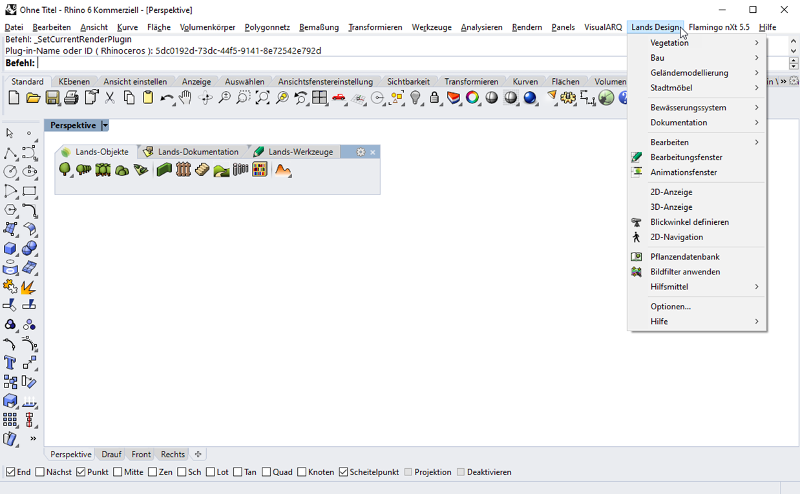

Die meisten Befehle des Programms sind aus dem Lands-Design-Menü heraus ausführbar. Alle Lands-Design-Objekte und -Werkzeuge, die sich in den Werkzeugleisten befinden, werden mit den entsprechenden Optionen angezeigt.

Lands Design Drop-Down-Menü.
HINWEIS: Das Drop-Down-Menü sollte in der Rhino-Oberfläche nach der Installation von Lands Design angezeigt werden. Wenn dies nicht der Fall ist, verwendet Lands Design eventuell eine veraltete "Lands Design.tb"-Datei (in Rhino 4.0) oder "Lands Design.rui"-Datei (in Rhino 5). In diesem Fall muss diese Datei manuell gelöscht und anschließend Lands Design deinstalliert und neu installiert werden. Die Dateien "Lands Design.tb" / "Lands Design.rui" befinden sich in folgendem Verzeichnis: